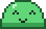
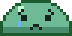
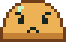
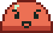
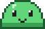
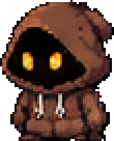
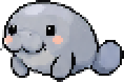

Sprite Sanctuary
A pixel pet that lives on your desktop and shows, by its mood alone, whether you're doing what you planned right now.
Download for Windows
Free · Windows 10 or 11 (64-bit) · Early test version
Windows will warn you the first time. The installer isn't signed yet, so you'll see "Windows protected your PC". To install anyway:
- Click More info.
- Click Run anyway.
Its mood is the whole message
The pet never talks and never blocks anything. Stay on your plan and it's happy. Drift and it slowly gets concerned, then sad, upset and angry. Get back to work and it cheers up.




Pick your pet



How it works
- Plan your day in the built-in calendar, by hand or by asking your own Claude or ChatGPT account. You can also import events from Google Calendar (read-only).
- During a block, it checks about once a minute whether the app or browser tab in front of you fits the task.
- The optional browser extension for Chrome and Brave tells it which tab is open.
- It never reports to anyone. What it keeps stays on your PC.